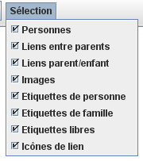
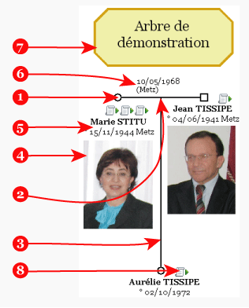

Ce menu, présent dans la barre de menu, gère la sélection des objets.

|  | Suivant les lignes qui sont cochées ou non,
vous autorisez ou interdisez la sélection des objets qui sont :
Ces choix ne concernent que la sélection à la souris de ces objets. Par exemple, si vous empêchez la sélection des étiquettes de personnes et que vous déplacez une personne, l'étiquette se déplacera quand même en même temps que la personne. Cela vient du fait que le déplacement est fait pour la personne et qu'elle déplace en même temps tous les objets liés à elle (étiquette de personne, image et icônes de lien). |